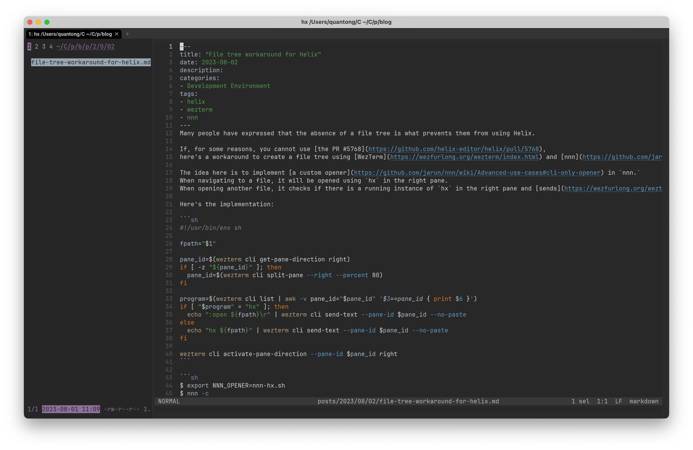

Quan Tong
Quan Tong
File tree workaround for Helix
2023-08-02

Many people have expressed that the absence of a file tree is what prevents them from using Helix.
If, for some reasons, you cannot use the PR #5768, here’s a workaround to create a file tree using WezTerm and nnn
The idea here is to implement a custom opener in nnn.
When navigating to a file, it will be opened using hx in the right pane.
When opening another file, it checks if there is a running instance of hx in the right pane and sends the :open $1\r command to that pane.
Here’s the implementation:
#!/usr/bin/env sh
fpath="$1"
pane_id=$(wezterm cli get-pane-direction right)
if [ -z "${pane_id}" ]; then
pane_id=$(wezterm cli split-pane --right --percent 80)
fi
program=$(wezterm cli list | awk -v pane_id="$pane_id" '$3==pane_id { print $6 }')
if [ "$program" = "hx" ]; then
echo ":open ${fpath}\r" | wezterm cli send-text --pane-id $pane_id --no-paste
else
echo "hx ${fpath}" | wezterm cli send-text --pane-id $pane_id --no-paste
fi
wezterm cli activate-pane-direction --pane-id $pane_id right
$ export NNN_OPENER=nnn-hx.sh
$ nnn -c
This allows you to efficiently manage your files and work with Helix using WezTerm and nnn.
Categories: Development Environment